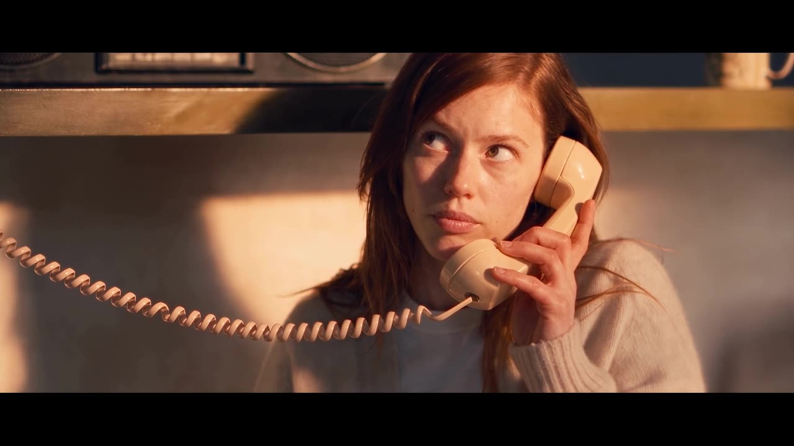
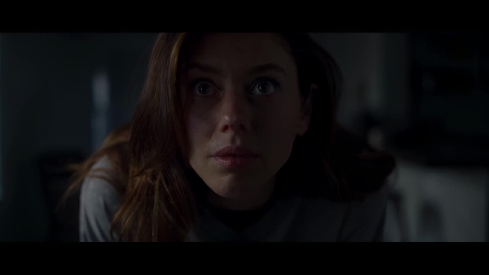
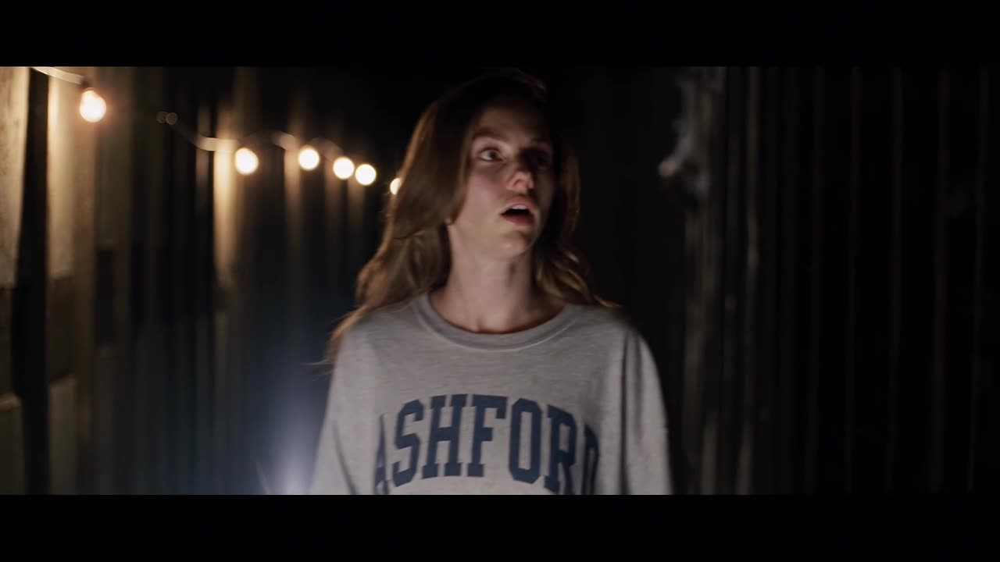
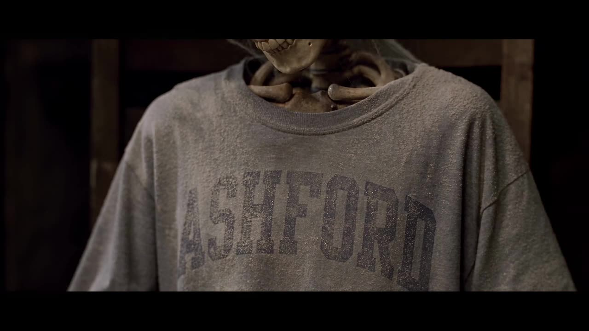

Short film · 2026
To Nora
A fully AI-generated psychological horror short set in the 1980s.
The brief
To Nora is a fully AI-generated psychological horror short film set in the 1980s. I wrote and generated it in about a week on a $600 budget. The hard part wasn't any single shot: it was keeping the same characters and the same locations consistent from one shot to the next, so the film reads as one world.
What I did
- Wrote the film.
- Generated every shot: no live action, no stock footage.
- Kept the same character, face and locations consistent across the whole film, from bright day scenes to dark, emotional close-ups.
- Delivered in about a week on $600.
The film
Same characters, same places, shot to shot




Results
- written and generated
- ~1 week
- total generation budget
- $600
- AI-generated
- 100%